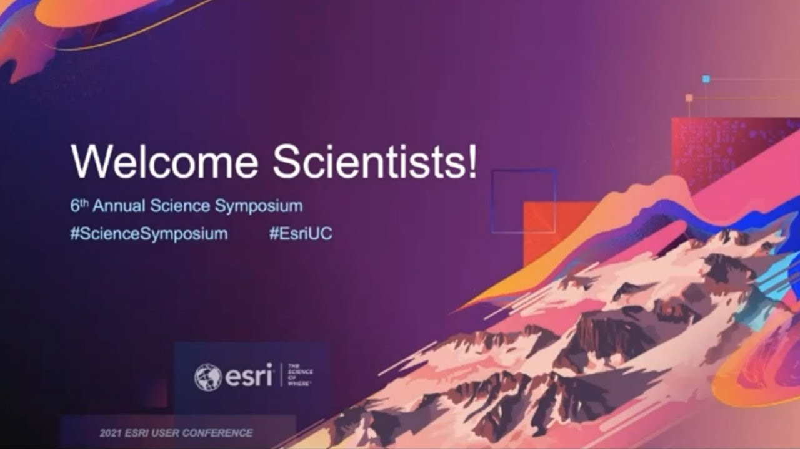
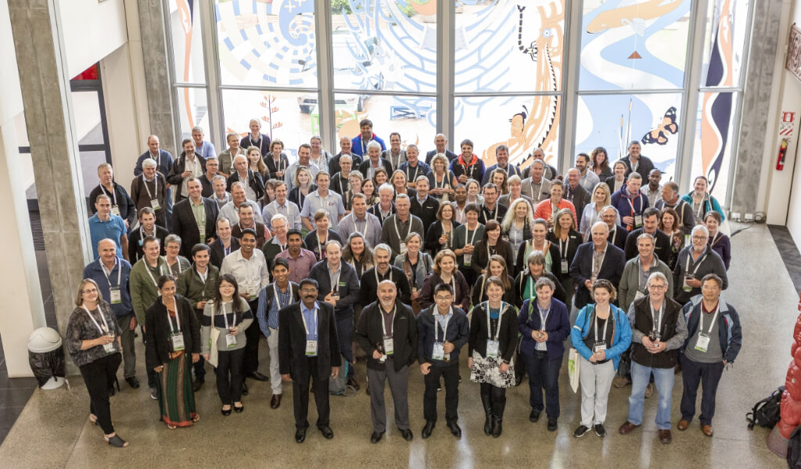
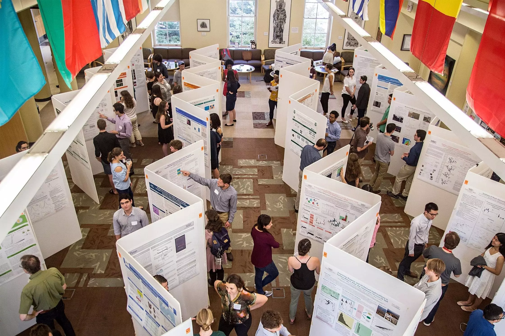

The Science Symposium is an annual event held each spring semester
as part of SSU's Week of Research and Creativity. The Science Symposium
showcases the scholarship and achievements of students from the School
of Science and Technology and those receiving funding from the Center
for Environmental Inquiry.



Previous year expo references:
This event consists of three tasks in cyber security domain.
They are: